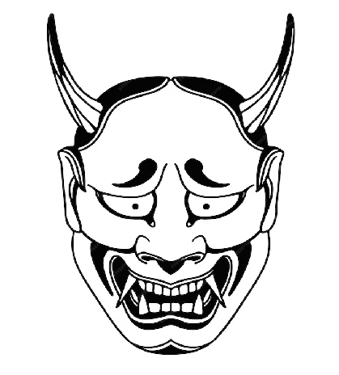

FelixNet
"I can go wherever I want and do whatever I want to do."

Journal
Películas, series, anime y videojuegos que he jugado y visto, con la cronología de cuándo los consumí.
Archivo
Documentos y cosas interesantes que conservo para compartir, incluidos algunos lost media.
Proyectos
Substack, despacho, investigación y desarrollo de software con aplicaciones financieras.
Sobre mí
Quién soy, mi formación y las dos vertientes de mi experiencia profesional.